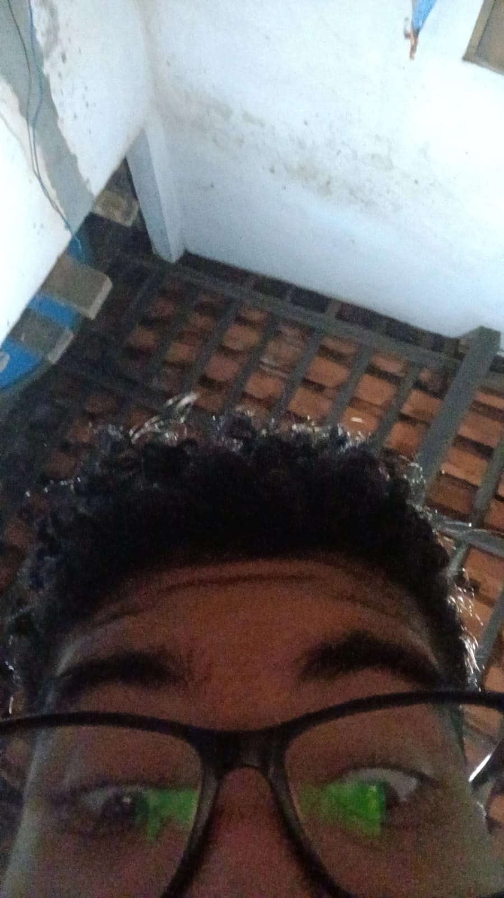

João Emanoel
Desenvolvedor Front-end no Programa Trilhas
Criativo e curioso desde meus primeiros anos. Sempre me senti atraído pela tecnologia e pela possibilidade de tornar ideias realidade, a fórmula perfeita que me trouxe a área da programação Front-End. Estou em estado de aprendizagem constante e me agarro à toda oportunidade de crescer e me aprimorar como programador. Atualmente estudando Desenvolvimento Front-End no programa Trilhas